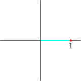
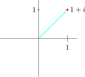

25.2 De Moivres Theorem
If \(\hspace {0.2cm} z = \cos \theta + i\sin \theta .\hspace {0.2cm}\) Then \(\hspace {0.2cm}\displaystyle {\big (\cos \theta + i \sin \theta \big )^n = \big (\cos n\theta + i \sin n\theta \big )},\hspace {0.2cm}\) for all \(n \in \mathbb {R}\).
Simplify without calculator \(\hspace {0.2cm}\displaystyle {\dfrac {\Big (\cos \dfrac {\pi }{7} - i\sin \dfrac {\pi }{7}\Big )^3}{\Big (\cos \dfrac {\pi }{7}+ i\sin \dfrac {\pi }{7}\Big )^4}}\)
\begin {align*} \dfrac {\Big (\cos \dfrac {\pi }{7} - i\sin \dfrac {\pi }{7}\Big )^3}{\Big (\cos \dfrac {\pi }{7}+ i\sin \dfrac {\pi }{7}\Big )^4} & = \dfrac {\Big (\cos \Big (-\dfrac {\pi }{7}\Big ) + i\sin \Big (-\dfrac {\pi }{7}\Big )\Big )^3}{\cos \Big (\dfrac {4\pi }{7}\Big )+ i\sin \Big (\dfrac {4\pi }{7}\Big )}\\\\ & = \dfrac {\cos \Big (-\dfrac {3\pi }{7}\Big ) + i\sin \Big (-\dfrac {3\pi }{7}\Big )}{\cos \dfrac {4\pi }{7}+ i\sin \dfrac {4\pi }{7}}\\\\ & = \cos \Big (-\dfrac {3\pi }{7}-\dfrac {4\pi }{7}\Big ) + i \sin \Big (-\dfrac {3\pi }{7}-\dfrac {4\pi }{7}\Big )\\\\ & = \cos \pi - i \sin \pi \\ & = -1 + 0 i\\\\ \end {align*}
Express \(\hspace {0.2cm}\cos 5\theta \hspace {0.2cm}\) in terms of \(\hspace {0.2cm} \cos \theta \).
Solution.
\(\therefore \hspace {0.4cm} \big ( \cos \theta + i\sin \theta \big )^5 = \cos 5\theta + i\sin 5\theta \hspace {0.2cm}\) by De Moivres theorem.
Now, \begin {align*} \big ( \cos \theta + i\sin \theta \big )^5 = & \cos ^5\theta + 5\cos ^4 \theta \big (i\sin \theta \big ) + 10\cos ^3\big (i\sin \theta \big )^2 + 10\cos ^2\theta \big (i\sin \theta \big )^3\\ & + 5\cos \theta \big (i\sin \theta \big )^4 + \big (i\sin \theta \big )^5\\ = & \cos ^5\theta + 5i\cos ^4 \theta \sin \theta - 10\cos ^3\theta \sin ^2\theta + 10 i \cos ^2\theta \sin ^3 \theta \\ & + 5\cos \theta \sin ^4\theta + i\sin ^5 \theta \end {align*}
\begin {align*} \implies \hspace {0.3cm} \cos 5\theta & = \cos ^5\theta - 10\cos ^3\theta \sin ^2\theta + 5\cos \theta \sin ^4\theta \\ & = \cos ^5\theta - 10\cos ^3\theta \big (1 - \cos ^2\theta \big ) + 5\cos \theta \big (1 - \cos ^2\theta \big )^2 \end {align*}
\[\therefore \hspace {0.5cm} \cos 5\theta = 16\cos ^5\theta - 20\cos ^3\theta + 5\cos \theta \]
Express \(\hspace {0.2cm} \cos ^4\theta \hspace {0.2cm}\) in terms of \(\hspace {0.2cm} \cos 4\theta \hspace {0.2cm}\) and \(\hspace {0.2cm} \cos 2\theta \).
Solution.
Let \(\hspace {0.2cm} z = \cos \theta + i\sin \theta \)
\(\dfrac {1}{z} = z^{-1} = \big (\cos \theta + i\sin \theta \big )^{-1} = \cos \theta - i\sin \theta \hspace {0.3cm}\) by De Moivres theorem.
\[ z + \dfrac {1}{z} = \cos \theta + i\sin \theta + \cos \theta - i\sin \theta \]
\[\Bigg (z + \dfrac {1}{z}\Bigg )^4 = 2^4\cos ^4\theta \]
\[\implies \hspace {0.4cm} z^4 + 4z^3\cdot \dfrac {1}{z}+ 6z^2\cdot \dfrac {1}{z^2} + 4z\cdot \dfrac {1}{z^4} + \dfrac {1}{z^4} = 16\cos ^4\theta \]
\[\implies \hspace {0.5cm} z^4 + \dfrac {1}{z^4} + 4\Big ( z^2 + \dfrac {1}{z^2}\Big ) + 6 = 16\cos ^4\theta \]
\[z^4 + \dfrac {1}{z^4} = \cos 4\theta + i \sin 4\theta + \cos 4\theta - i\sin 4\theta = 2\cos 4\theta \]
\[z^2 + \dfrac {1}{z^2} = 2\cos 2\theta \]
\begin {align*} z^4 + \dfrac {1}{z^4} + 4 \Big (z^2 + \dfrac {1}{z^2}\Big ) + 6 & = 16\cos ^4\theta \\ \implies \hspace {0.5cm} 2\cos 4\theta + 4\big (\cos 2\theta \big ) + 6 & = 16\cos ^4\theta \\ \implies \hspace {0.5cm} 2\cos 4\theta + 8\cos 2\theta + 6 & = 16\cos ^4\theta \end {align*}
\begin {align*} \therefore \hspace {0.5cm} \cos ^4\theta & = \dfrac {1}{16}\big [2\cos 4\theta + 8\cos 2\theta + 6 \big ]\\\\ & = \dfrac {1}{8}\cos 4\theta + \dfrac {1}{2}\cos 2\theta + \dfrac {3}{8}\\ \end {align*}
\(*\hspace {0.5cm} z = 1\hspace {0.2cm}\) principle angle is \(\hspace {0.2cm} \theta = 0, \hspace {0.2cm} r = 1\)

\(*\hspace {0.5cm} z = 1 + i\hspace {0.2cm}\) principle angle is \(\hspace {0.2cm}\dfrac {\pi }{4}\hspace {2cm}\)

Questions on this section
Stuck on something here? Ask below and it stays attached to this topic.